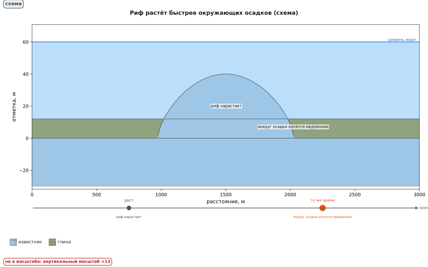

Путь › Что такое риф и как читать его породы › Шаг 3 из 56
Что делает постройку настоящим рифом
В книге: «КРАТКИЕ СВЕДЕНИЯ О ГЕОЛОГИИ РИФОВ И ИХ ТИПАХ» стр. 201
Опирается на: шаг 2 «Биостром и биогерм: пласт или холм» (предпосылка)
Суть
Риф — карбонатный массив, выросший благодаря колониальным или нарастающим организмам.
Он растёт быстрее, чем вокруг копятся осадки, поэтому получается мощнее их и возвышается над ними.
Нефтяных геологов интересуют именно рифы в узком смысле: строение их резервуаров и отчасти ловушек.
Пороговая идея. Отличить состав массива от процесса, создавшего превышение над окружающими осадками. модель
Как это работает
Определение
Риф в узком смысле — сложное геологическое образование. Оно возникает в результате жизнедеятельности колониальных или нарастающих организмов. стр. 201
«Рифы – это сложные геологические образования, возникающие в результате жизнедеятельности колониальных или нарастающих организмов»
Это карбонатный массив, сложенный по крайней мере частично остатками организмов и продуктами их разрушения. Значит, весь риф не обязан быть сплошным каркасом — опорной структурой из организмов в положении роста. стр. 201
«карбонатный массив, сложенный, по крайней мере частично, остатками организмов и продуктами их разрушения.»
Механизм
Главное — скорость. Риф растёт быстрее, чем вокруг накапливаются осадки. стр. 201
«Поскольку скорость роста рифа превышает скорость накопления окружающих осадков»

Автор делает вывод: поэтому мощность рифа больше мощности синхронных отложений. И он возвышается над ними. стр. 201
«его мощность больше мощности синхронных отложений и он возвышается над ними»
Что важно нефтяникам
Для нефтяных геологов наибольший интерес представляют рифы в узком, буквальном смысле слова. Автор описывает строение их природных резервуаров — тел пород, способных вмещать и пропускать флюиды. И отчасти строение ловушек — конфигураций, которые удерживают скопление нефти или газа. стр. 201
«для геологов-нефтяников наибольший интерес представляют рифы в узком буквальном смысле этого слова.»
«Именно они, точнее строение их резервуаров и частично ловушек, описаны в настоящей работе.»
Цифры и условия
- Условие рифа: скорость роста больше скорости накопления окружающих осадков. стр. 201
- Остатки организмов составляют массив хотя бы частично, не обязательно целиком. стр. 201
Что это значит для данных модель
Геометрия и состав — разные группы доказательств.
- Вход
- Сопоставление мощностей, описание остатков организмов и продуктов разрушения.
- Выход
- Аргументированное распознавание рифового происхождения.
- Где ломается
- Если окружение или внутренняя структура не наблюдаются.
- гипотеза Превышение над фоновыми слоями проверять независимо от состава породы.
Где здесь ручной труд специалиста
- Входные данные
- Описание пород и геологические разрезы.
- Ручные шаги
- Сопоставить массив и одновозрастные окружающие слои.
- Точки суждения
- Решить, подтверждён ли генезис, то есть происхождение тела.
- Время
- Не задано автором; зависит от полноты разреза.
- Типичные ошибки
- Считать достаточно убедительным одно внешнее сходство с куполом.
Аналогия модель
Сравните рост рифа и накопление окружающих осадков с двумя потоками записи, которые заполняют хранилища с разной скоростью.
Где аналогия перестаёт работать: У пород накопленное может разрушаться или переотлагаться, а сами скорости не обязаны быть постоянными.
Как это делается сейчас модель
Сохраняйте признаки каркасной породы и оценку геометрии отдельно и привязывайте их к разным наблюдениям.
Глубже
Отличайте происхождение и конечный состав модель
Доля исходных остатков может быть небольшой, даже если именно организмы запустили рост всей постройки.
Новые понятия
- риф
- Карбонатный массив, выросший благодаря жизнедеятельности организмов и частично сложенный их остатками и продуктами разрушения. стр. 201
- природный резервуар
- Тело пород, способных вмещать и пропускать нефть, газ и воду. стр. 201 модель
- ловушка
- Геологическая конфигурация, удерживающая скопление нефти или газа. стр. 201 модель
- каркас
- Опорная структура из остатков организмов в положении роста. стр. 201 модель
Проверь себя
Верный ответ: Риф растёт быстрее, чем вокруг накапливаются осадки
Опережающий рост — причина того, что риф мощнее и возвышается над окружением. Где это в тексте (стр. 201) →
Вставьте пропущенное слово.
Рифовый карбонатный массив сложен по крайней мере остатками организмов и продуктами их разрушения.
Верный ответ: Рифовый карбонатный массив сложен по крайней мере [частично] остатками организмов и продуктами их разрушения.
Определение не требует, чтобы весь риф состоял из остатков организмов. Где это в тексте (стр. 201) →
Источник
Все утверждения шага с дословной цитатой автора и страницей книги (по PDF).
Риф возникает в результате жизнедеятельности колониальных либо нарастающих организмов. наблюдение
«Рифы – это сложные геологические образования, возникающие в результате жизнедеятельности колониальных или нарастающих организмов»
Остатки организмов и продукты их разрушения составляют по крайней мере часть карбонатного массива. наблюдение
«карбонатный массив, сложенный, по крайней мере частично, остатками организмов и продуктами их разрушения.»
Риф растёт быстрее, чем вокруг накапливаются осадки. наблюдение
«Поскольку скорость роста рифа превышает скорость накопления окружающих осадков»
Из-за опережающего роста риф мощнее синхронных отложений и возвышается над ними. вывод
«его мощность больше мощности синхронных отложений и он возвышается над ними»
Для нефтяных геологов автор выделяет интерес именно к рифам в узком смысле. наблюдение
«для геологов-нефтяников наибольший интерес представляют рифы в узком буквальном смысле этого слова.»
В фрагменте рассмотрено строение резервуаров рифов и отчасти ловушек. наблюдение
«Именно они, точнее строение их резервуаров и частично ловушек, описаны в настоящей работе.»
На этот шаг опираются: шаг 4 «Одиночный риф или рифовая цепочка», шаг 5 «Каркас запускает рост рифа», шаг 37 «Что замыкает рифовую ловушку».